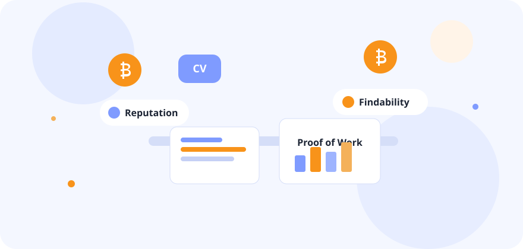

Jobs
6 roles in the feed
Bitcoin-only listings sit beside a smaller set of adjacent roles, so the signal stays readable.
Members only
From job discovery to talent curation. This area is reserved for POW Lab members.
Use your member email and passcode. Nothing on this page is loaded from another site.
Demo members: member@bitvocation.local or jordan@bitvocation.local. Passcode: reserve.
POW Lab
From job discovery to talent curation. We help Bitcoiners and Bitcoin jobs become more findable.
“Thanks to the job feed, I landed my Bitcoin job at Satlantis.”

The reserve
Hiring on open networks brings a flood of mismatched applications. The POW Lab is a smaller, vetted circle of Bitcoin-aligned designers, developers, operators, and marketers.
Jobs
Bitcoin-only listings sit beside a smaller set of adjacent roles, so the signal stays readable.
Findable
A short profile in the reserve is what founders see before they ever open a CV pile.
Community
Introduce yourself, trade feedback, and take on short projects through the talent exchange.
Member feed
A sample of the member feed: Bitcoin-only roles first, with adjacent companies kept in their own filter. These listings are illustrative and stay on this site.
Talent pool
Members answer a short brief — focus, proof of work, and where they can work — so recommendations are not another CV database.
Listed for founder introductions.
In the reserveLibrary
Practical notes from the public Bitvocation programs, kept here for members. No outbound downloads.
Career Compass
Jobtober
For companies
Featured roles and partnership notes stay inside the membership. Search the reserve before opening a public posting.